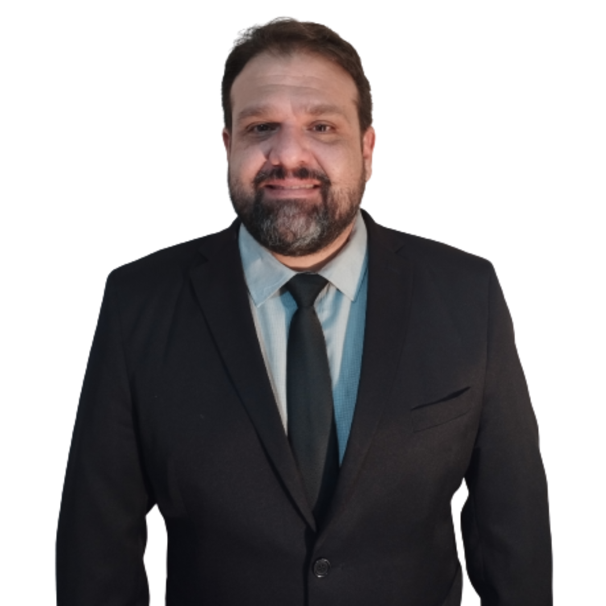

Nossa História
Em meados de 2006, na pequena cidade de Quatá/SP, Dr. Gustavo Caroni Averoldi iniciou sua caminhada na advocacia de forma corajosa, fundando o escritório que hoje leva suas iniciais no nome. Em mais de 15 anos de atuação no mercado, “GCA advocacia” se tornou sinônimo de seriedade e competência em toda a região.
No ano de fundação do escritório, Dr. Gabriel Henrique Averoldi Magalhães e Dr. João Vito Carone Ramalho tinham, respectivamente, 11 e 10 anos de idade. Sobrinhos de Dr. Gustavo, inspiraram-se na trajetória do sócio fundador e em um longevo histórico familiar de paixão pelo Direito para unirem seus esforços à advocacia de excelência prestada pelo escritório GCA.
Unindo a experiência adquirida em mais de uma década e meia a um conhecimento técnico refinado e atualizado, a equipe do escritório GCA advocacia procura tratar cada caso com o merecido esmero. Entendemos que uma advocacia comprometida com os detalhes de cada caso é essencial para o sucesso de um processo judicial.
Adequando-se aos reclamos da atualidade, “GCA advocacia” agora propicia aos seus clientes a prestação de um serviço “100% online”, buscando extrair o máximo possível dos benefícios trazidos pelos avanços tecnológicos. Com as novas formas de comunicação em tempo real e a crescente informatização dos serviços da justiça, acreditamos ser plenamente possível praticar a boa advocacia somente por intermédio das telas.


- DR. GUSTAVO CARONI AVEROLDI • Advogado inscrito na OAB/SP sob o n. 254.907 • Formado pela Universidade do Oeste Paulista - Presidente Prudente - SP
- DR. GABRIEL HENRIQUE AVEROLDI MAGALHÃES • Advogado inscrito na OAB/SP sob o n. 460.138 • Formado pela Universidade de São Paulo – Faculdade de Direito de Ribeirão Preto - SP.
- DR. JOÃO VITO CARONE RAMALHO • Advogado inscrito na OAB/SP sob o n. 472.102 • Formado pelo Centro Universitário Toledo – Presidente Prudente - SP.
Redes Sociais